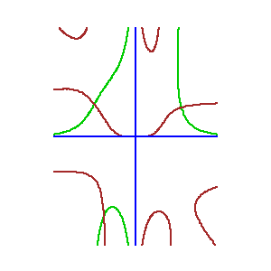
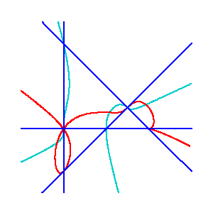

Gale duality for complete intersectionsFrédéric Bihan and Frank Sottile. |
||
| We show that every complete intersection of Laurent polynomials in an algebraic torus is isomorphic to a complete intersection of master functions in the complement of a hyperplane arrangement, and vice versa. We call this association Gale duality because the exponents of the monomials in the polynomials annihilate the weights of the master functions and linear forms defining the two systems also annihilate each other. We use Gale duality to give a Kouchnirenko theorem for the number of solutions to a system of master functions and to compute some topological invariants of generic master function complete intersections. | ||
|
A pair of Gale dual complete intersections | ||
|
 x3y2 = x4y-1 -x4y - 1/2 xy2 = x4y-1 +x4y - 1 |
 s2 (s+t-1)3 = t2 (s-t-1/2) s(s-t-1/2)3 = t3 (s+t-1) |
|